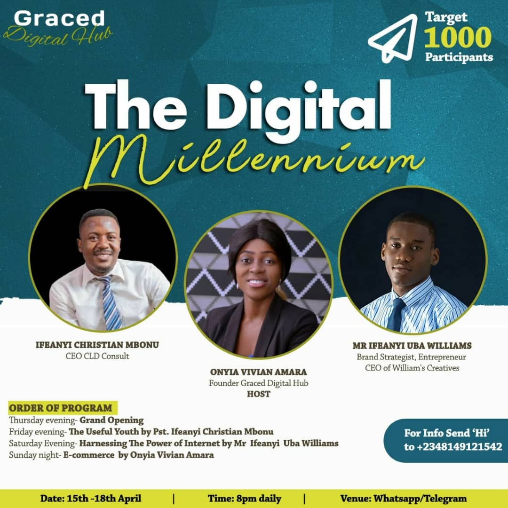

Digital Millennium Master Class

Digital Millennium class 101
Isn't the New Year wonderful?
April sure has an amazing package for you!
One of the problems we have today is that many people want to make money but lack the necessary information and the
technical know-how. The world have gone global, thus it's a digitalized world. Your ability to know your way round the
internet is your saving grace and your paycheck.
The pandemic of 2019/2020 was a huge blow to the globe but then, it showed people that you don't really
need going to the office to get your work done. Virtually every activity that once required a physical registration
was carried out online; ranging from business meetings, to church activities, to academic activities and etc.
While lots of people lost their jobs, some schools, churches, companies were on lockdown, some others were still running,
holding virtual conferences and zoom meetings. While some were complaining of their losses, a handful of others were running their businesses.
It is a digital millinnieum! You can't afford to be left behind. In a nutshell, this class affords you the opportunity to
learn all that has to do with the internet and its usage for to enhance your financial capacity.
Join me on a 4 day FREE intensive webniar.
To participate Click the Link..
Join here
See you flier for full details